1日目：アニメの聖地「池袋」

「旅の始まりは、おなじみのJR山手線で上野駅から池袋駅へ。たった210円の切符ですが、これこそが若者たちのカラフルな世界への扉を開く鍵なのです！」
目的地：アニメイト池袋本店
駅を出ると目の前にそびえ立つ、情熱の9階建て！大迫力の展示、マンガ＆アート、ユニークな「キャラクター香水」まで、オタク文化の『聖地』です。

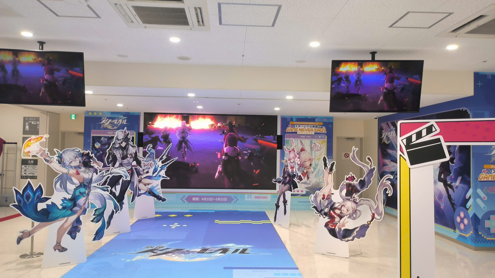

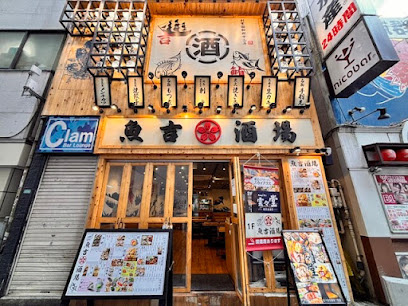
絶品グルメ：魚吉酒場
歩き疲れたら『魚吉酒場』へ。おすすめは「馬刺し」。絶品のタレで餃子を食べてみると、普通の醤油とは一味違う驚きの美味しさに出会えますよ！
住所: 豊島区東池袋1-7-4 | 料理: 1,000円〜
静かな午後のひととき
午後2時頃になったら、静かな東池袋公園に立ち寄って、木漏れ日を眺めながら一休み。
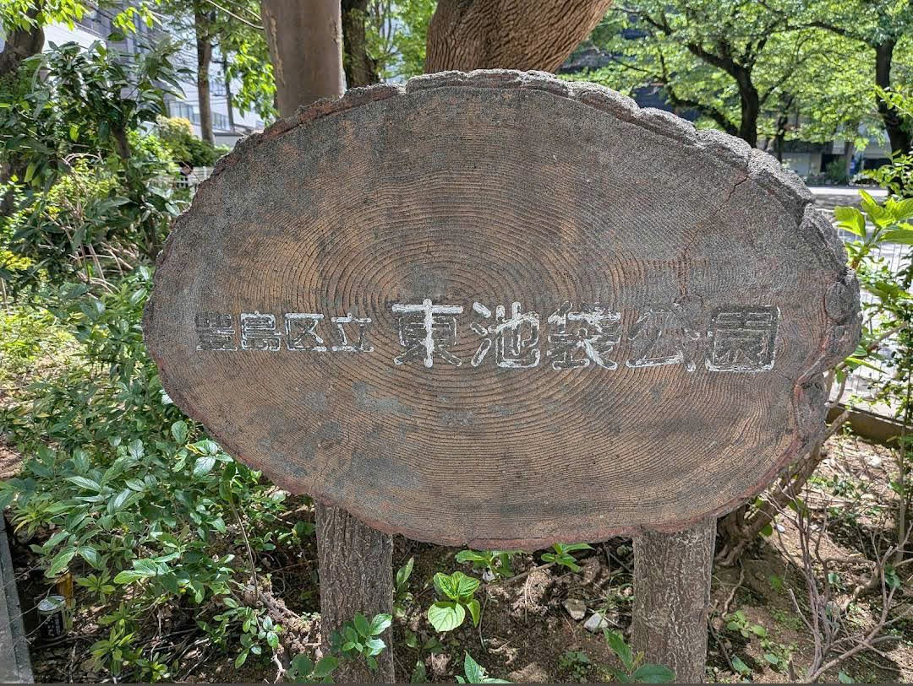
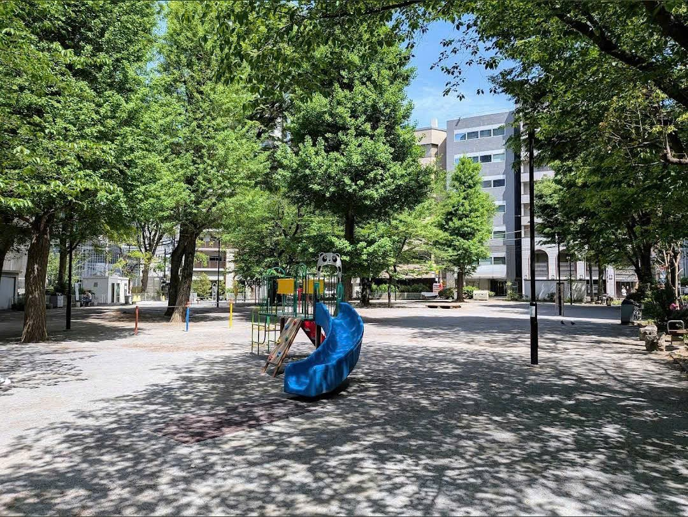
帰り道にたこ焼きを：築地銀だこ
池袋駅へ戻りましょう。24番出口から入ってすぐ。自分へのご褒美としてアツアツのたこ焼きをぜひ！
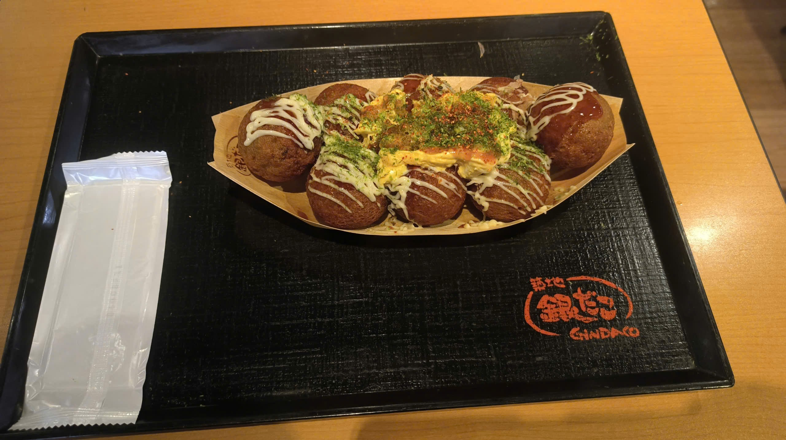
住所: 豊島区南池袋1-28-2 (JR池袋駅構内)
2日目：古都「浅草」への旅
たった180円で、稲荷町から浅草へ向かう電車は、あなたを現代の喧騒から連れ出し、歴史と静寂に包まれた神聖な空間へと誘ってくれます。

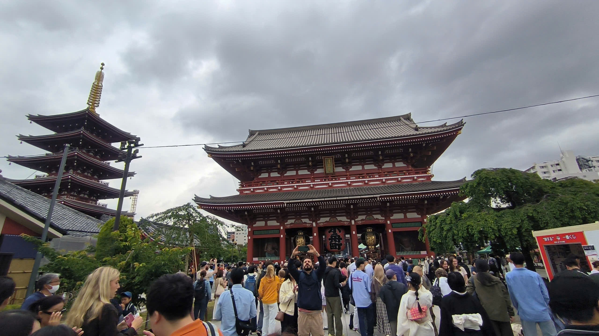
浅草寺古刹 ― 神聖な美しさ
鮮やかな朱色が美しい歴史ある浅草寺。高くそびえ立つ五重塔や、にぎやかな仲見世通りの風景は浅草を代表する名所として多くの人に親しまれています。東京の伝統的な雰囲気を感じながら、ゆっくり参拝を楽しめる人気スポットです。
住所: 台東区浅草2-3-1 | 入館料: 無料
おみくじで運試し＆お守りを購入
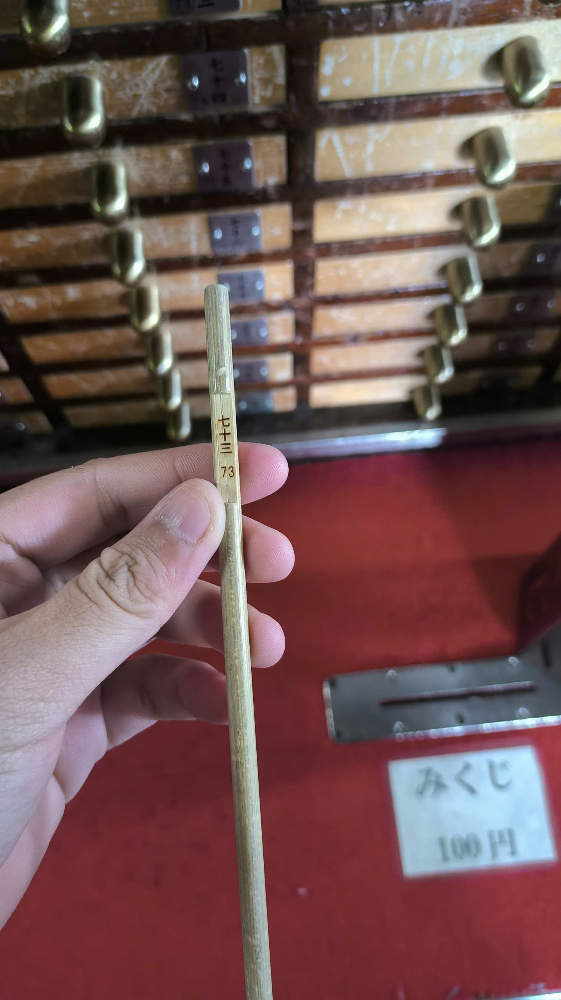
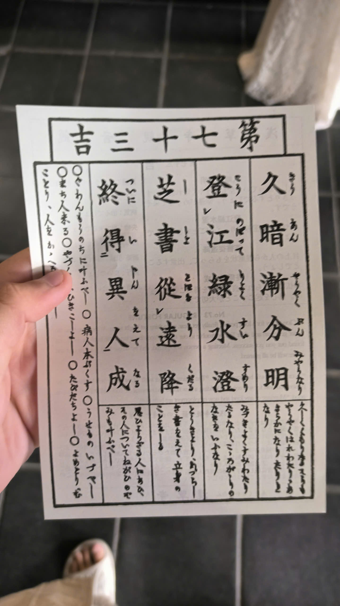
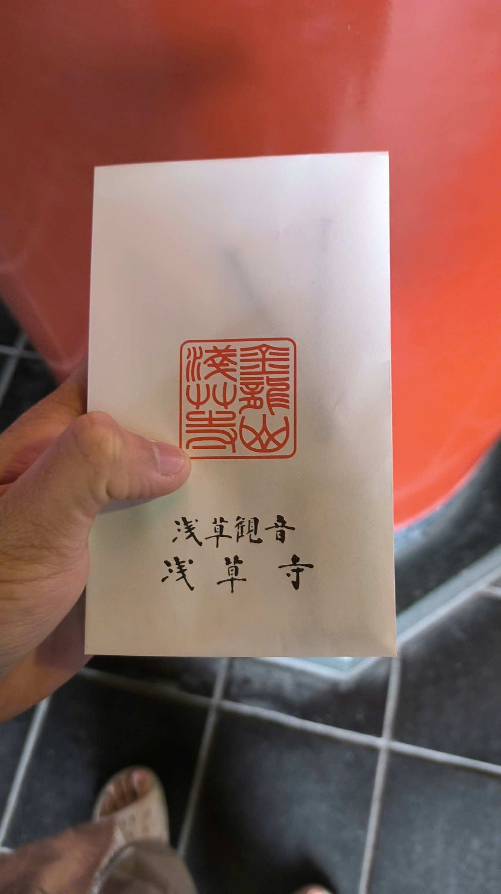
私のように『吉』（73番など）を引いたら、それは幸運の兆し！お守りを購入するのもおすすめです。
隅田川沿いを散策
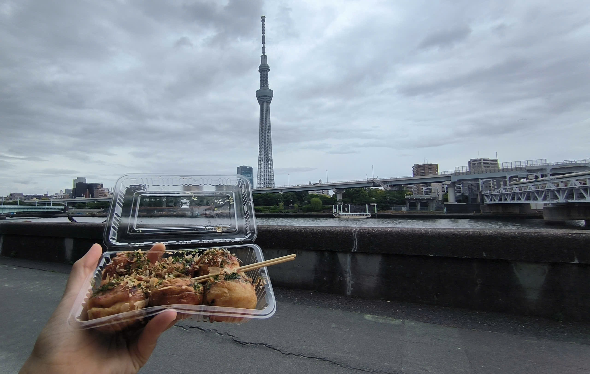
縁起の良いチョコバナナ（400円）とたこ焼き（700円）を持って隅田公園へ。空高くそびえる東京スカイツリーを眺めます。
稲荷町駅近くで夕食：日高屋
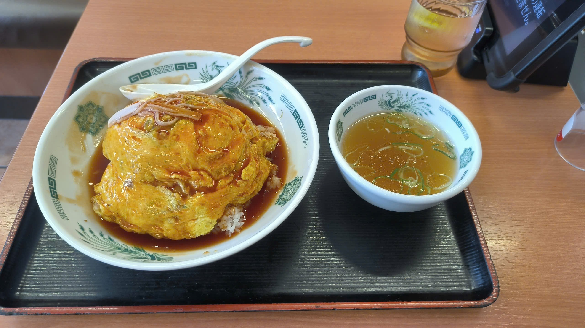
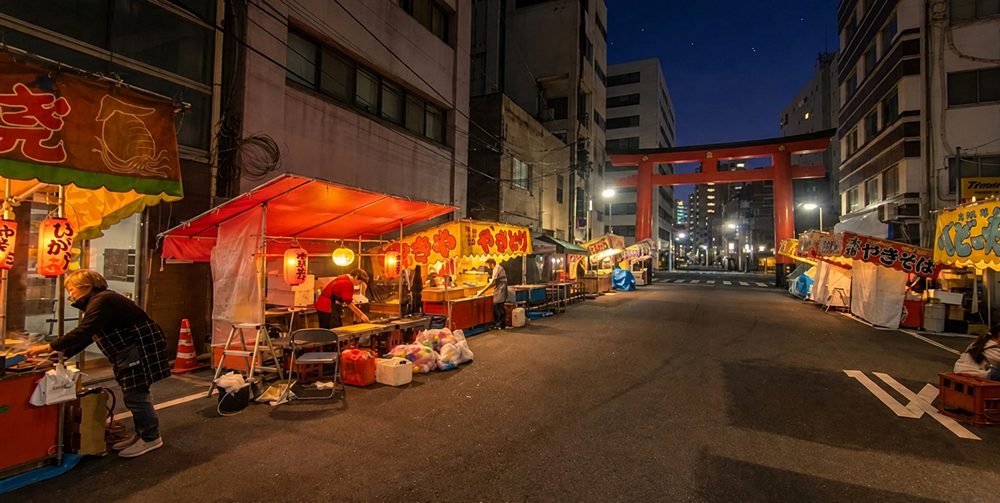
自分へのご褒美にオムライスを！食後は立派な真っ赤な鳥居がある「下谷神社」へ散歩しましょう。
日高屋 住所: 台東区東上野5-1-3 | 料理: 500円から
3日目：お台場と新宿の夜
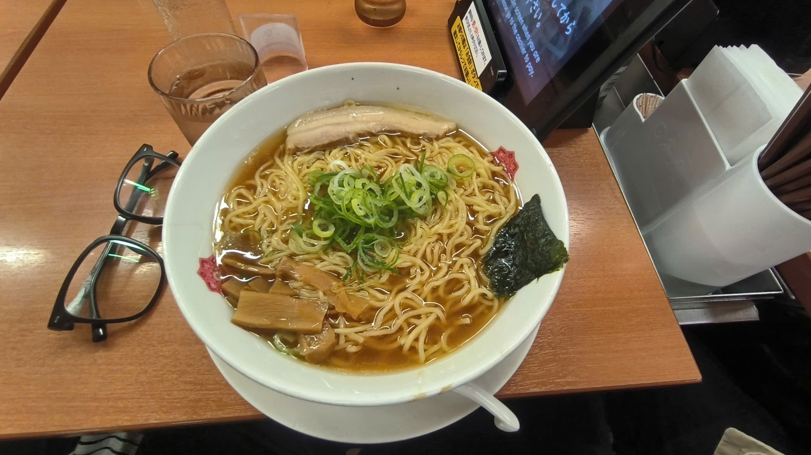
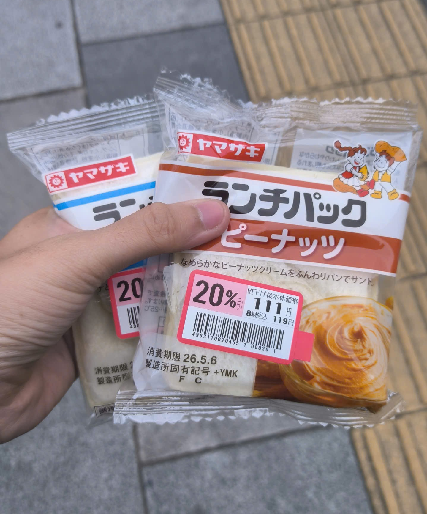
最終日のエネルギーチャージは、大衆食堂『日高屋』でラーメンや天津飯（てんしんはん）を！コンビニに寄って、合計222円のサンドイッチを追加で買ったら、いざ出発です！
午前：お台場人工海水浴場
Step 1: 銀座線で稲荷町駅（G17）から新橋駅（G08）へ（運賃：210円）
Step 2: 「ゆりかもめ」の新橋駅（U01）に乗り換え
Step 3: お台場海浜公園駅（U06）へ（運賃：325円）


お台場には綺麗な人工ビーチと、ミニサイズの『自由の女神像』があります。ベンチを見つけて、サンドイッチを味わいましょう。


記念スタンプを見つけて、旅の思い出として自分の手でスタンプを押すのも素敵な体験です。
📍 お台場海浜公園
住所:
〒135-0091東京都港区台場1丁目4
ガンダムベース東京
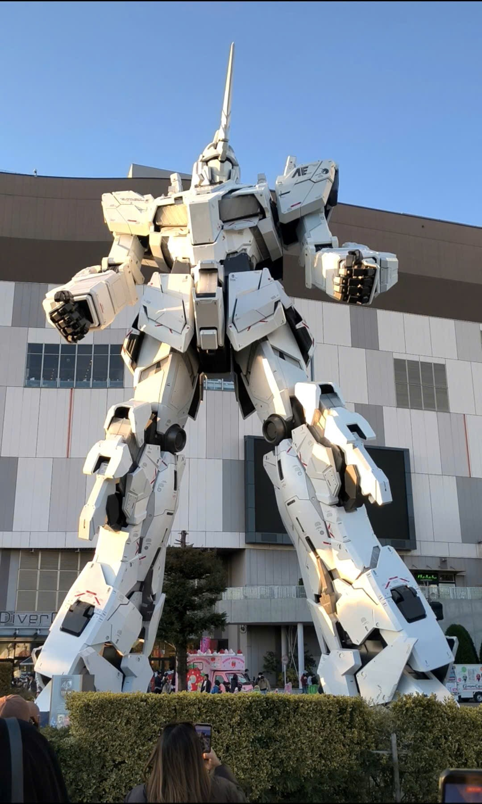
絶対に外せない撮影スポット！超巨大で迫力満点の実物大ガンダム立像は必見です。
住所: 〒135-0064東京都江東区青海1丁目1−10 | 時間: 10:00 – 21:30
夜：新宿ライトショー

夜が更けたら、新宿へ。色鮮やかに輝く東京の夜景と光のプロジェクションマッピングを楽しんでください。
住所: 〒163-8001 東京都新宿区西新宿2丁目8-1 | 時間: 19:30 – 21:30
💡 初心者向けポケットガイド
🚆 スマートモビリティ
- ICカードが最高！ SuicaかPasmoカードで電車も自販機もスムーズ。
- Googleマップ： 路線の色と駅番号（G17、U01など）をしっかり確認。
🍜 美味しくてお手頃
- 日高屋や魚吉酒場なら500〜800円で本格和食。
- コンビニのサンドイッチやおにぎりはピクニックに最適。
- 浅草寺周辺の屋台（たこ焼き、かき氷）も外せません。
📸 訪問体験
- 無料の観光スポット（隅田公園、新宿展望台など）を賢く利用。
- 駅や観光地でスタンプを集めるための小さなノートを持参！
- 急がず、公園でゆったり電車の往来を眺めるのも素晴らしい旅の方法です。